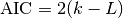
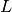
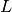
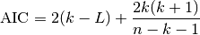
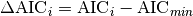
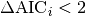
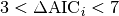
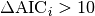
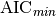

akaike_info_criterion¶
-
astropy.stats.akaike_info_criterion(log_likelihood, n_params, n_samples)[source] [edit on github]¶ Computes the Akaike Information Criterion (AIC).
Like the Bayesian Information Criterion, the AIC is a measure of relative fitting quality which is used for fitting evaluation and model selection. The decision is in favor of the model with the lowest AIC.
AIC is given as

in which
 is the sample size,
is the sample size,  is the number of free
parameters, and  is the log likelihood function of the model
evaluated at the maximum likelihood estimate (i. e., the parameters for
which L is maximized).
is the number of free
parameters, and  is the log likelihood function of the model
evaluated at the maximum likelihood estimate (i. e., the parameters for
which L is maximized).In case that the sample size is not “large enough” a correction is applied, i.e.

Rule of thumb [R26]:

: substantial support for model i
: considerably less support for model i
: essentially none support for model i
in which  stands for the lower AIC among the models which are being compared.
For detailed explanations see [R26]-[R31].
Parameters: log_likelihood : float
Logarithm of the likelihood function of the model evaluated at the point of maxima (with respect to the parameter space).
n_params : int
Number of free parameters of the model, i.e., dimension of the parameter space.
n_samples : int
Number of observations.
Returns: aic : float
Akaike Information Criterion.
References
[R26] (1, 2, 3) Cavanaugh, J. E. Model Selection Lecture II: The Akaike Information Criterion. <http://myweb.uiowa.edu/cavaaugh/ms_lec_2_ho.pdf> [R27] (1, 2) Mazerolle, M. J. Making sense out of Akaike’s Information Criterion (AIC): its use and interpretation in model selection and inference from ecological data. <http://theses.ulaval.ca/archimede/fichiers/21842/apa.html> [R28] Wikipedia. Akaike Information Criterion. <https://en.wikipedia.org/wiki/Akaike_information_criterion> [R29] Origin Lab. Comparing Two Fitting Functions. <http://www.originlab.com/doc/Origin-Help/PostFit-CompareFitFunc> [R30] Liddle, A. R. Information Criteria for Astrophysical Model Selection. 2008. <http://arxiv.org/pdf/astro-ph/0701113v2.pdf> [R31] (1, 2) Liddle, A. R. How many cosmological parameters? 2008. <http://arxiv.org/pdf/astro-ph/0401198v3.pdf> Examples
The following example was originally presented in [R27]. Basically, two models are being compared. One with six parameters (model 1) and another with five parameters (model 2). Despite of the fact that model 2 has a lower AIC, we could decide in favor of model 1 since the difference (in AIC) between them is only about 1.0.
>>> n_samples = 121 >>> lnL1 = -3.54 >>> n1_params = 6 >>> lnL2 = -4.17 >>> n2_params = 5 >>> aic1 = akaike_info_criterion(lnL1, n1_params, n_samples) >>> aic2 = akaike_info_criterion(lnL2, n2_params, n_samples) >>> aic1 - aic2 0.9551029748283746
Therefore, we can strongly support the model 1 with the advantage that it has more free parameters.